Yosr Jabloun
Final-year Telecommunications Engineering student @ ENIT + second-year master's student in traitement de l'information et complexité du vivant | AI & Computer Vision Enthusiast
Turning telecom systems-thinking into applied AI — computer vision, deep learning, and building things that actually hold up in the real world.
About Me
I'm a final-year Telecommunications Engineering student at the National Engineering School of Tunis (ENIT) and, in parallel, a second-year master's student in traitement de l'information et complexité du vivant, with a growing passion for AI, Machine Learning, Deep Learning, and Data Engineering. My academic background in telecommunications gives me a strong systems-level perspective, which I've been channeling into applied AI work — particularly computer vision and building AI systems that are robust, efficient, and trustworthy. I'm currently an Artificial Intelligence Intern at Talan Tunisie, working on World Models. Outside of coursework, I've held leadership roles within the IEEE community, including Chair of the IEEE ENIT Student Branch (2025) and currently Educational Activities Committee Member at the IEEE Technical Activities Committee, Tunisia Section.
Education

École Nationale d'Ingénieurs de Tunis (ENIT)
ICT Engineering + Master’s degree in Technology of Information and Complexity of Living Systems
2024–2027
IPEIN Nabeul
Preparatory Program for Engineering Studies, Physics/Chemistry
2022–2024
Skills
Languages
Python C/C++ MATLABAI/ML & Computer Vision
TensorFlow Keras OpenCV TensorFlow.js MediaPipe CNN BiLSTM VideoMAE Transfer LearningOther
Networking (CCNA fundamentals) Fiber Optics Embedded Systems (Arduino)Technical Projects
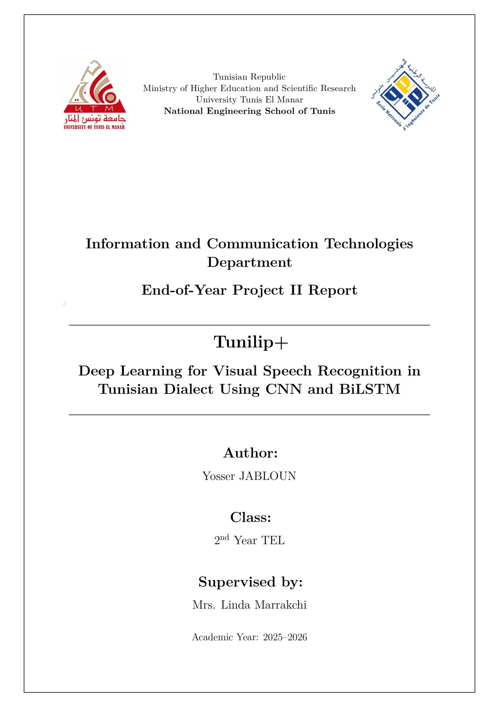
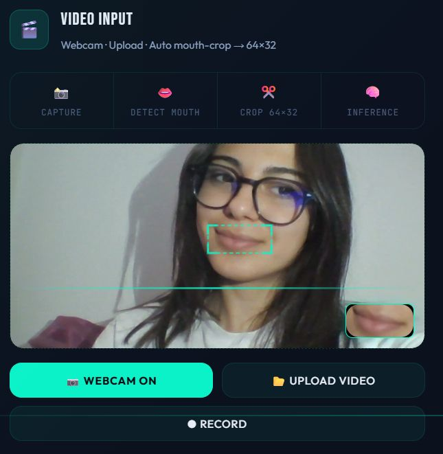
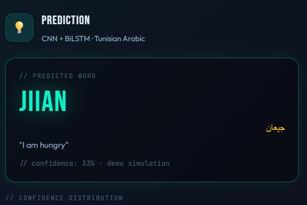
TUNILip+ — Automated Lip Reading for Tunisian Dialect
End-of-year project building an automated lip-reading system for Tunisian Arabic from scratch — no prior dataset or benchmark existed. Built a custom dataset from 50+ volunteer speakers, then compared four modeling approaches (CNN-BiLSTM, MobileNetV2 transfer learning, VideoMAE fine-tuning, and a hybrid ensemble). Deployed fully client-side in the browser via TensorFlow.js, with no video ever leaving the device.
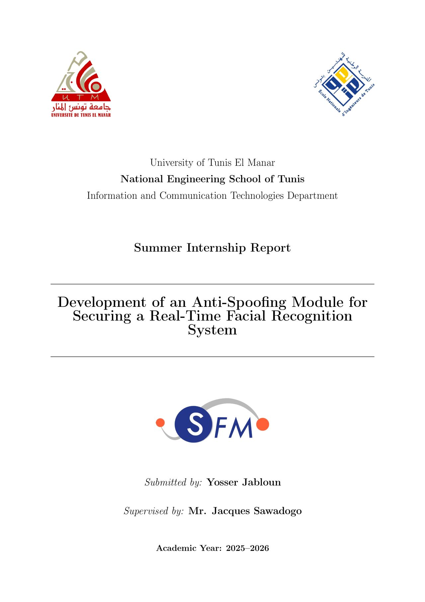
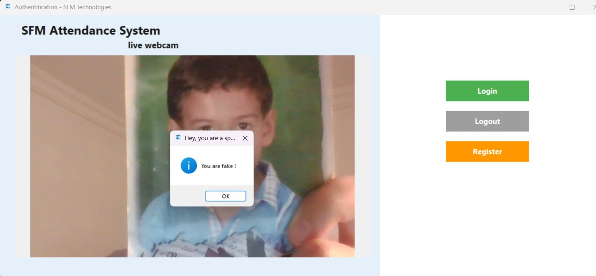
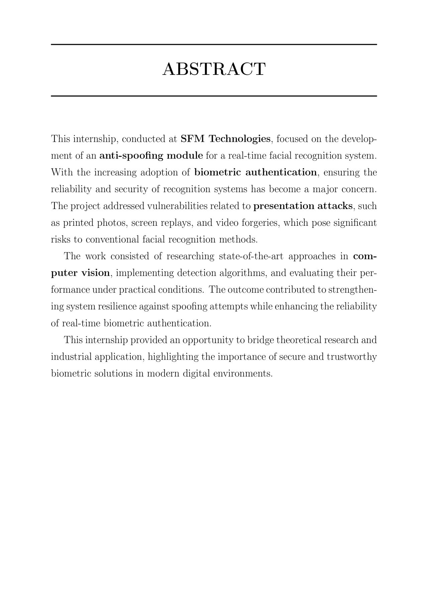
Anti-Spoofing Module for Facial Recognition
Built during a Computer Vision internship at Groupe SFM. Designed and trained a CNN-based binary classifier (Real vs. Spoof) in Keras/TensorFlow to detect presentation attacks (printed photos, screen replay, masks) against real-time facial recognition. Deployed within a full GUI with live webcam feed, secure login/logout, and a guided multi-angle registration flow resistant to spoofing at enrollment.
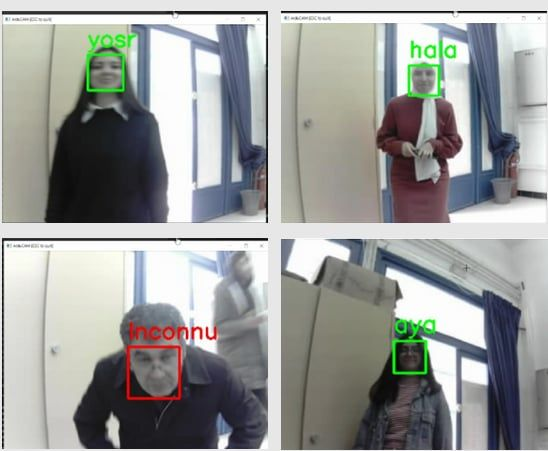
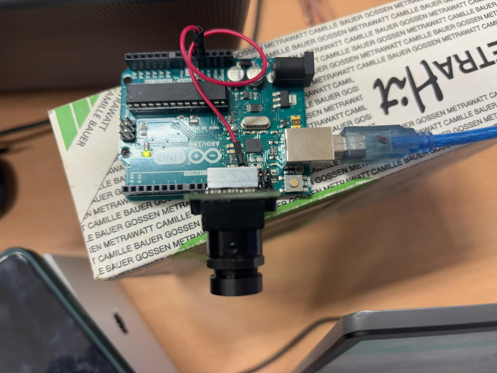
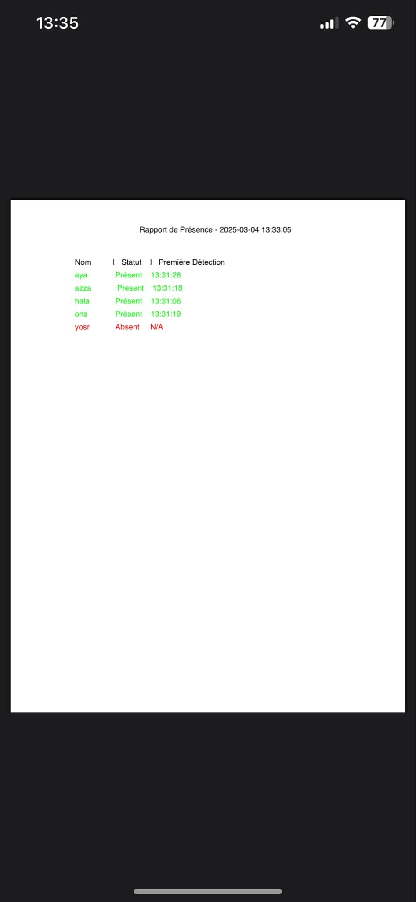
Intelligent Video Surveillance — Face Detection System
Team project combining an ArduCam camera with a Python facial recognition pipeline. The system captures real-time video, detects unknown faces, sends automatic email alerts with the captured image, and generates a PDF attendance report.
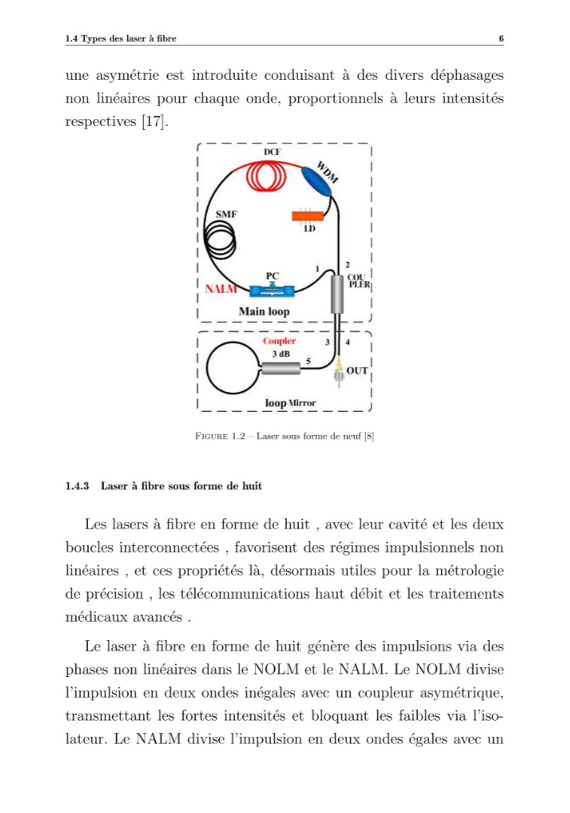
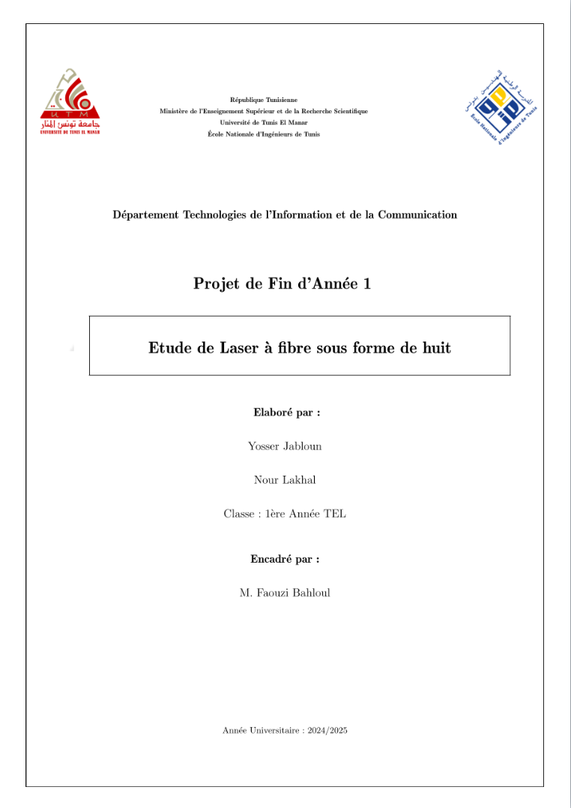
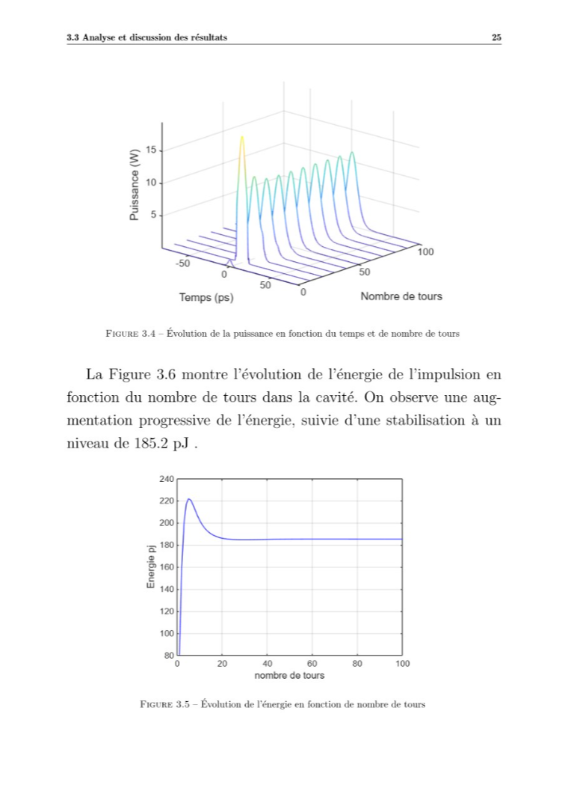
Figure-of-Eight Fiber Laser Simulation
Simulation and modeling of a figure-of-eight fiber laser architecture known for producing stable ultrashort pulses. Modeled the system using the nonlinear Schrödinger equation and implemented the Split-Step Fourier Method (SSFM) to analyze pulse evolution within the cavity.
WordPress & Community Websites


IEEE ENIT Student Branch — Official Website
Designed and developed the official WordPress website for the IEEE ENIT Student Branch, as part of my role as Chair of the Student Branch (2025).


IEEE Education Week Tunisia — Website
Developed the website for IEEE Education Week in Tunisia, in collaboration with the IEEE Tunisia Section, as part of my role in the Educational Activities Committee within the Technical Activities Committee.
Experience & Leadership
Artificial Intelligence Intern
Talan Tunisie — Jun 2026 – Present
Working on World Models.
Certificate unavailableEducational Activities Committee Member
IEEE Tunisia Section — Mar 2026 – Present
Certificate unavailableChair
IEEE ENIT Student Branch — Jan 2025 – Dec 2025
Certificate unavailableCoordination Committee Chair
IEEE YP Tunisia taskforce — Apr 2026 – Present
Certificate unavailableComputer Vision Intern
Groupe SFM — Jul 2025 – Aug 2025
Anti-spoofing for real-time facial recognition.
Certificate unavailableVolunteer
Tunisian Red Crescent — Jul 2019 – Mar 2024
Certificate unavailable